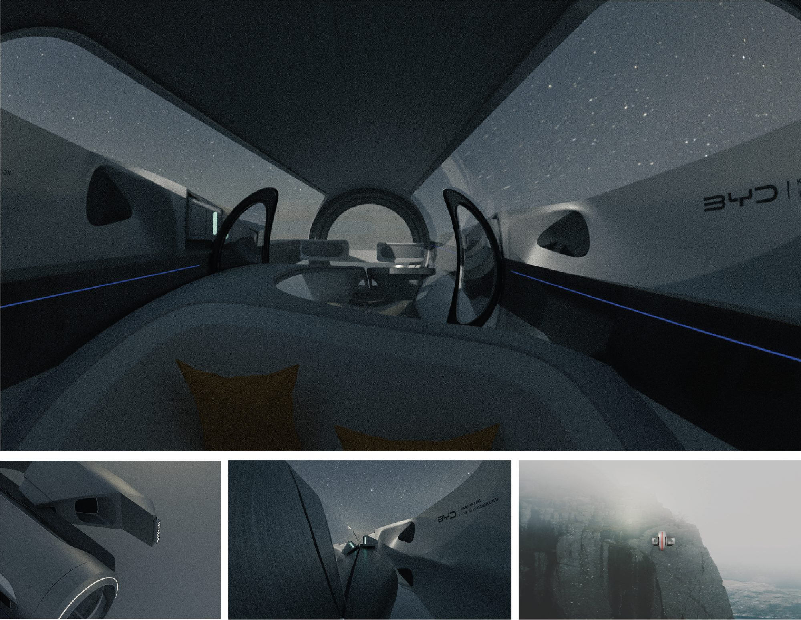
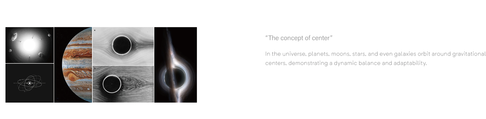
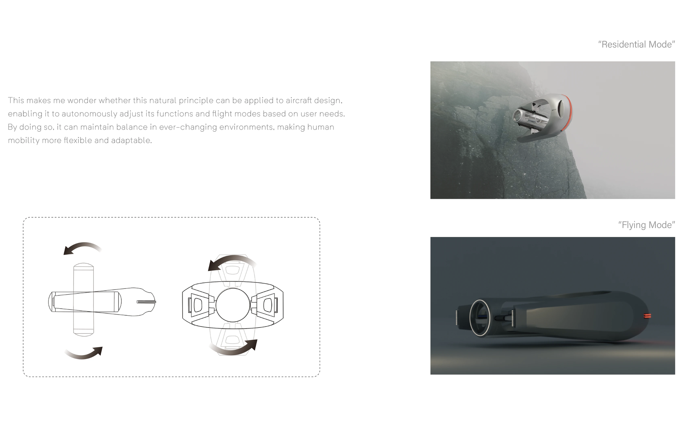
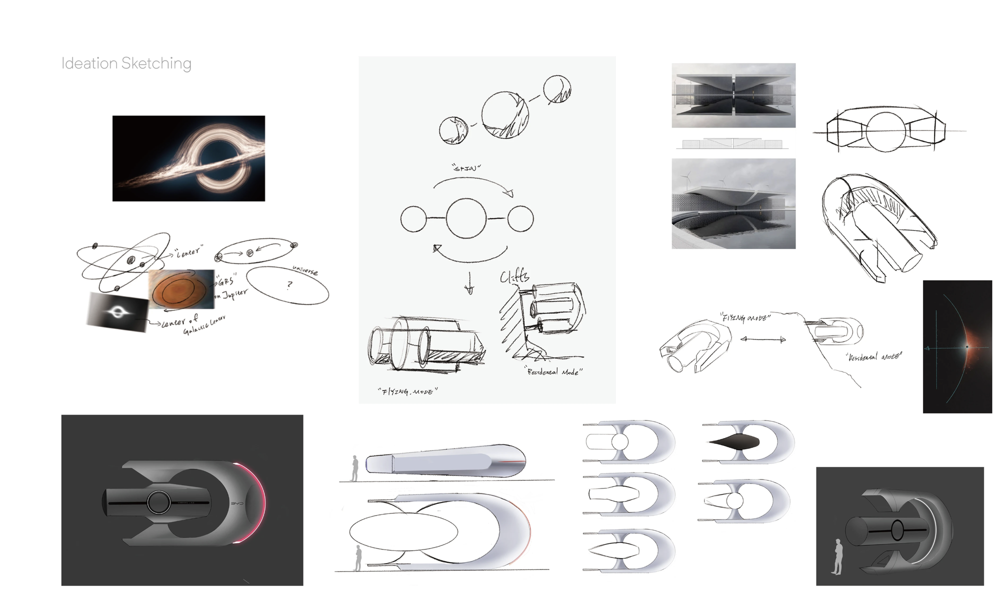
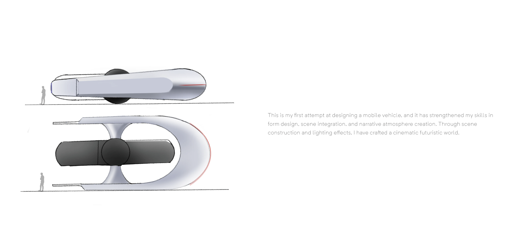

Karman Line
2024/02
Team
Personal Project
Inspired by Interstellar and Why Travels Matter?, I have reimagined the way humans might move and live in extreme environments in the future. In response to climate change and shifting landscapes, Karman Line is designed to securely attach to harsh terrains, offering a new way for people to survive and explore. It is more than just a vehicle—it is a mobile habitat adapted to the challenges of the future, allowing humans to find a sense of belonging and possibility in the vast unknown.




